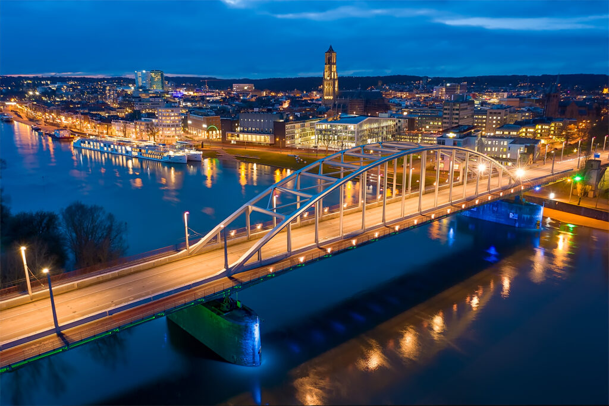

  <main class="container" role="complementary">
<section >
  <div class="row row-img "> 

    
    </div>
    <div class="home">
  <h1 class="hometitle">Visit Arnhem</h1>
</div>

  <div class="row mt-5 arnhemtext" >
 address is a large city in itself, and it is now very well known as the site of one of the most famous battles of World War II.
  Granted with city rights in 1233, it has been a center of conflict for a long time due to its strategic location on the banks of the River Rhine.
  The Battle of Arnhem, which is part of the Market Garden process, occurred in September 1944. Due to a series of mistakes in large part,
  the advanced coalition forces failed to secure one of the major bridges and suffered defeat, which delayed the Allies ’advance to Germany until the coming of spring.
  next one. "A Bridge Too Far", produced in 1977, was based on the events that occurred here.
  </div>
  
  <div  class="row mt-5" aria-details=" geography and population ">
      <div class="col-lg-4 text-center">
        <i class="fas fa-map" ></i>
        <h2 class="text-primary">Area</h2>
        <p>
          
          Municipality:101.54 km2<br>
            Land:97.99 km2<br>
            Water:3.55 km2
          </p>
      </div>
      <div class="col-lg-4 text-center ">
        <i class="fas fa-users"></i>
        <h2 class="text-primary">Population</h2>
        <p>
          Municipality:159,265<br>
            Density:1,625/km2<br>
          </p>
      </div>  
      <div class="col-lg-4  text-center">
        <i class="fas fa-map-pin"></i>
        <h2 class="text-primary" >Contact codes</h2>
        <p>
          Postcode:6800–6846<br>
            Area code:026<br>
            Website:<a class="arnhemsite" type="button" href="https://www.arnhem.nl/" target="_blank">Www.Arnhem.nl</a>
          </p>
      </div> 
      </div>
  </section>
  
</main>